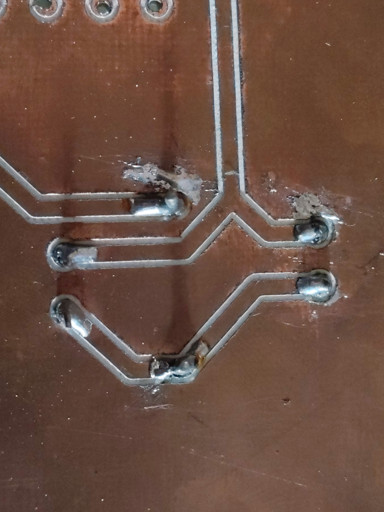
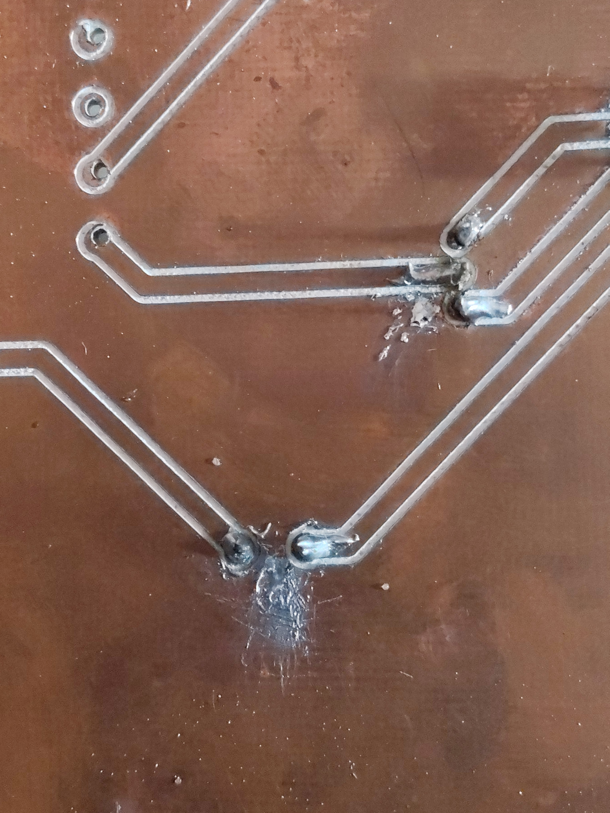
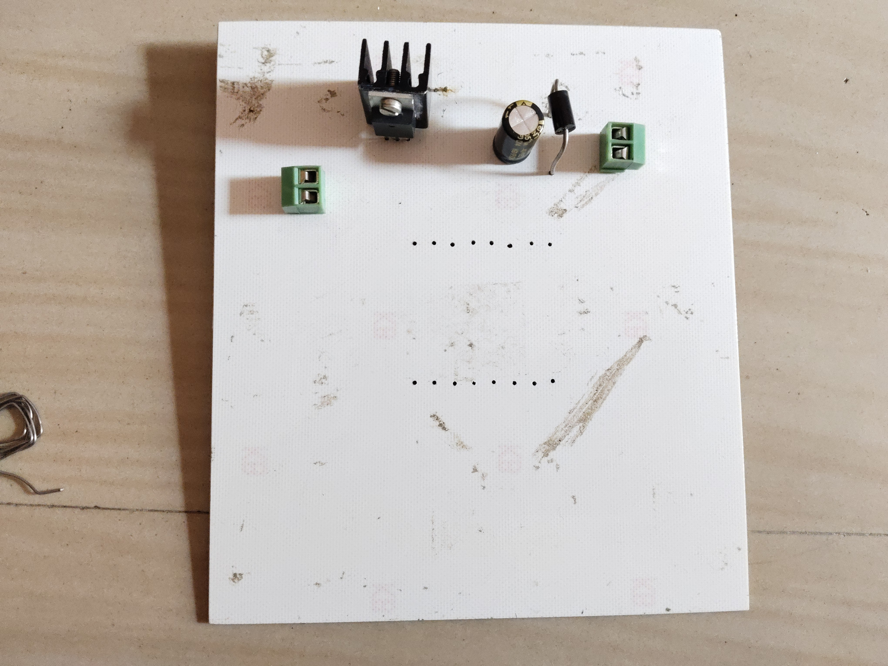
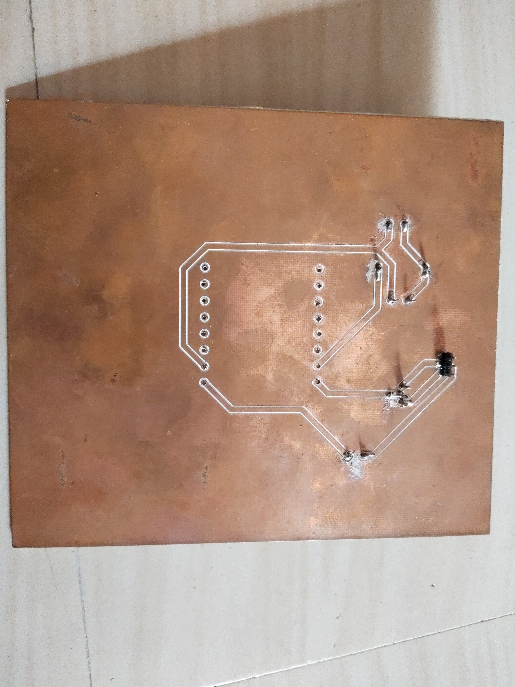
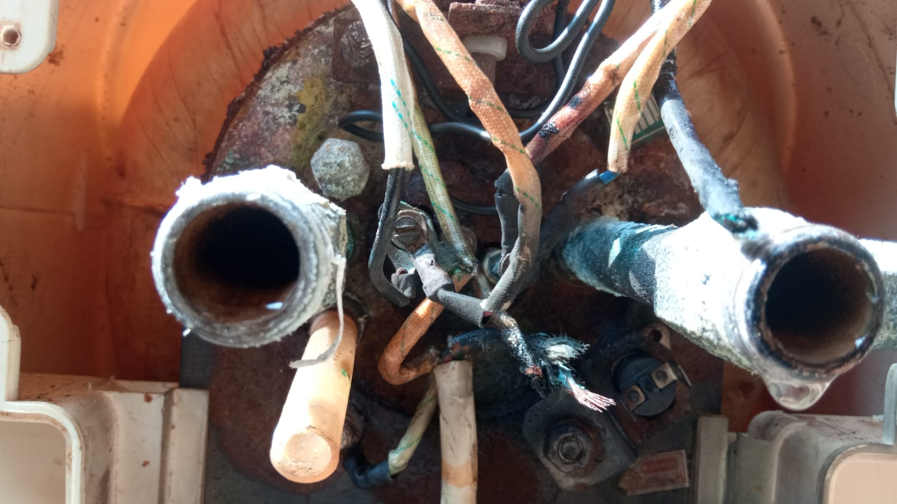
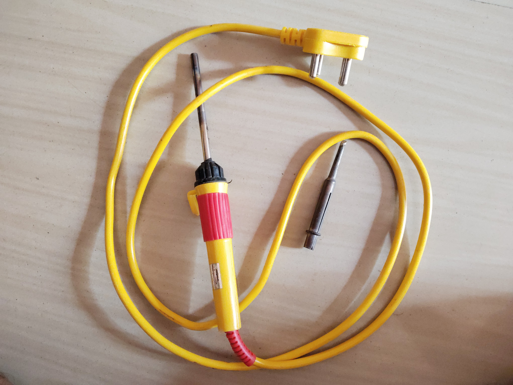
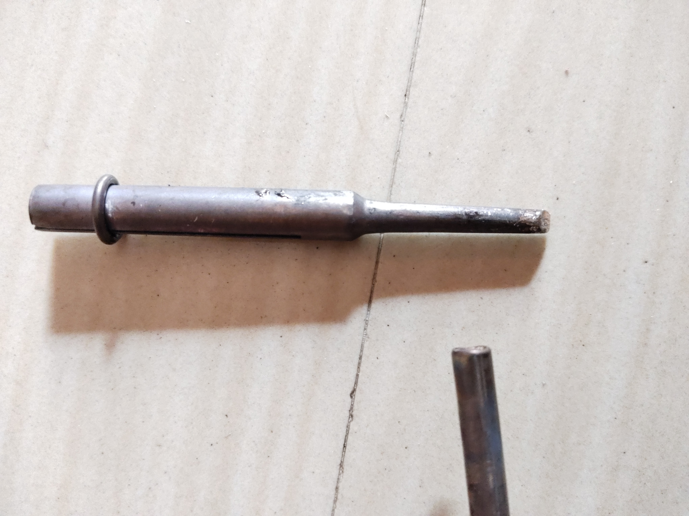

Amount of Errors and bad stuffs i gone through
Repair?
Since i am a ee student my parents think i could repair practically anything and i took pride in it.
But what i break is more amusing then what i repair; i broke a laptop, few 24V adaptor, some speakers, so many motors(both small and big one) and the list goes on.
One might wonder why one cares about it but few of these broken stuffs are what i ment to repair.
And Projects??
I do projects that ended up unfinished or thrown into yet-to-do stuffs, one such is flyback converter (30V to 150V) which is left unfinished due to required SWG Cu wires are unavailable (yah, I have to do transformer winding by hand which is kinda intresting though btw)
Another-one is a mic and/or speaker to test FFT and DCT for removing background noise but as big as this project, so do cost and confussions
Showcase of my dirty works
Soldering stuffs:


Fly-back inverter:


Any Repairs?
Since i learn worst way possible (including busting many breakers, thanks to MCB) i do learn lots of stuffs and repaired or atleast find the problem
Few such include finding a short in a old laptop,
Repaired water heater, Bluetooth 5 speaker and most of the electrical appliances.
To be fair, those are unnotable and never need to be talked about but the key point is
You cannot ask "Fan Capacitor" or "Switch for heater", it maybe enough to understand but it unethical cause no one want to call a product by its function unless its a name. Here "condenser" and "thermostat valve" is the key word.
This May look like memorizing stuffs like classes but its just the way it is, Also heres a photo taken while repairing:

Also by anychance you are buying a soldering machine like this:


Get a "soldering iron tip kit" or something likely cause 1 tip is not enough for all, also buy a mesh tip cleaner cause soldering tips always be nasty(I learned this recently in hard way btw).
Thanks for reading.